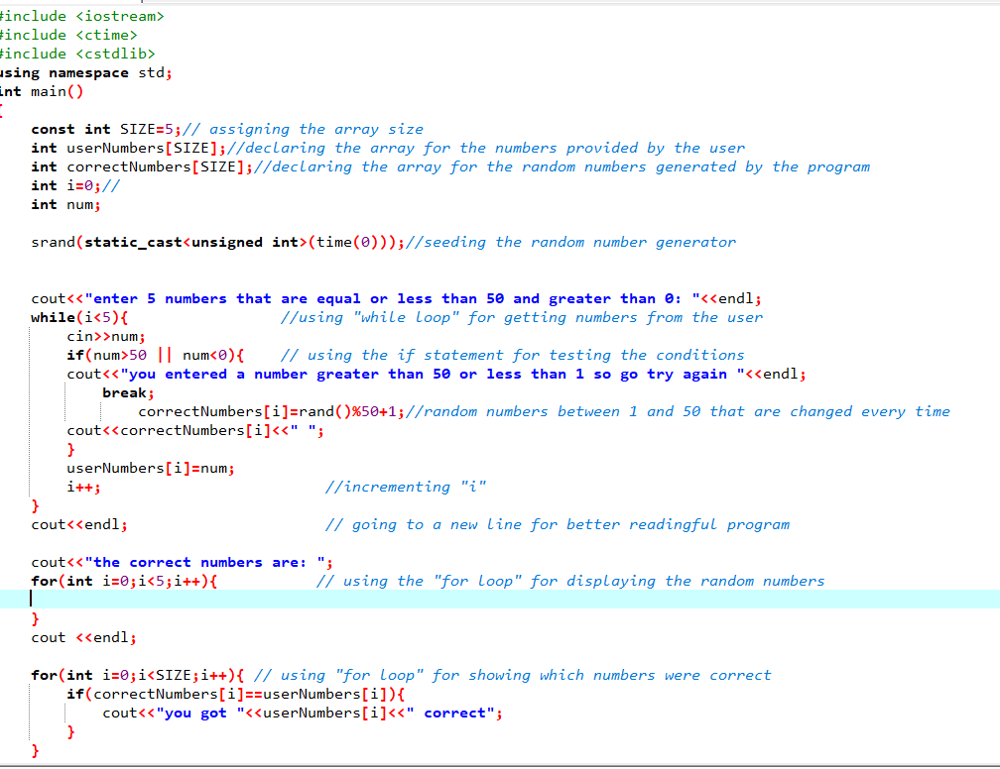
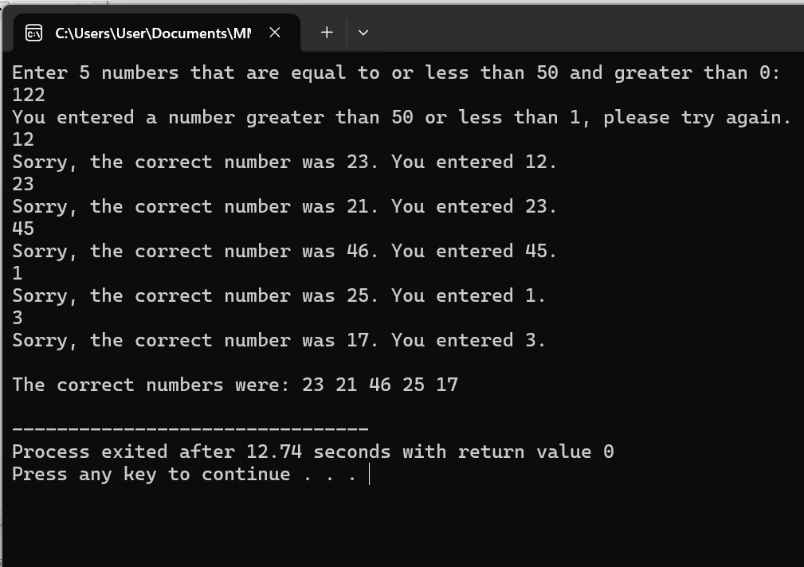

There are many projects I have done so far, but I will only be focusing on the top 4 projects I did.
which are:
A mobile-responsive business portfolio website built using HTML, CSS, and GitHub Pages.
This project demonstrates my ability to create a modern, clean, and professional website for personal branding.
I Developed a simple 2D game using HTML5 canvas, Javascript, and CSS. The game features:
Dynamic animations, a scoring system, and user interaction through keyboard inputs.This project helped me understand game mechanics and basic AI behaviours.
|  | This was the C++ code I used to make my program. |
|  | This is the results that I obtained after building and running my program. |
I Developed a 5 guessing number game in C++ that gives out 5 random numbers each time the user plays.
This game can be put in action in betting sites because the output is not known by anybody.The project helped me to understand the importance of sRand() in C++.
I Developed a calculator using C++ to perform operations like multiplying, adding, subtracting, and dividing.With this project I was able to perform almost every task i could perform on the scientific calculator.
This project highlights my skills in programming and mathematical computations